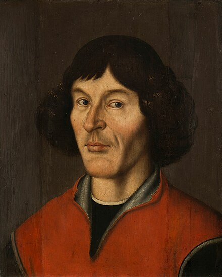
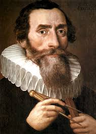
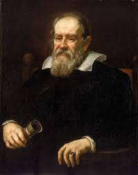

Famous Astronomers

In 16th century Poland, astronomer Nicolaus Copernicus (1473-1543) proposed a model of the solar system that involved the Earth revolving around the sun. His ideas took almost a hundred years to gain credence, but Galileo's 1632 assertions that the Earth orbited the sun built upon the Polish astronomer's work, cementing the Copernican revolution.

Danish astronomer Tycho Brahe, Johannes Kepler (1571-1630) determined that planets traveled around the sun not in circles, as Copernicus had thought, but in ellipses. In so doing, he calculated three laws involving the motions of planets that astronomers still use in calculations today

Though a model of the Earth circling the sun was first proposed by Copernicus, it took some time before it became widely accepted. Galileo is most widely known for defending the idea several years after Kepler had already calculated the path of planets, and Galileo wound up under house arrest at the end of his lifetime because of it.

Sir Isaac Newton (1643-1727) is most famous for his work on forces, specifically gravity. Building on the work of those who had gone before him — he is quoted as saying, "If I have seen further, it is by standing upon the shoulders of giants" — he calculated three laws describing the motion of forces between objects, known today as Newton's laws.